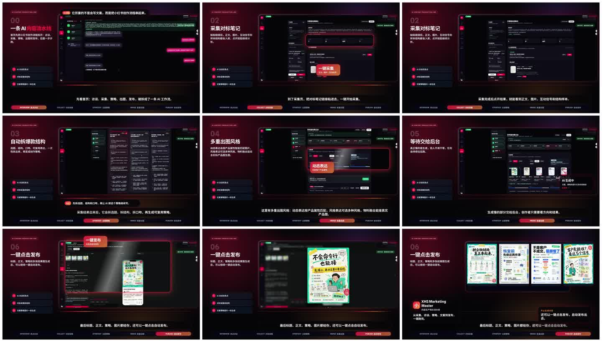

XHS AI Notes
An open noncommercial Xiaohongshu and Rednote AI note tool for teams that need more than a prompt: note generation, benchmark analysis, content strategy, platform-native copywriting, cover image prompts, browser extension workflows, and content asset operations.
From one-off Xiaohongshu note drafts to a repeatable content system.
The project connects the operational steps that usually live in separate tools: benchmark notes, product positioning, topic routes, Xiaohongshu note drafts, visual direction, browser extension automation, and historical review.
Collect product details, target audience, benchmark notes, and campaign goals.
Create multiple Rednote-native angles with hooks, body outlines, and risk checks.
Draft Xiaohongshu titles, body copy, tags, cover direction, and image-generation prompts.
Use browser extension workflows and asset history to support real content operations.
Built for people searching for a Xiaohongshu note generator, not another prompt box.
It is designed for SaaS, AI tools, education, consumer products, local services, independent builders, and growth teams exploring Rednote/Xiaohongshu content automation.
Transforms product value into platform-specific content angles, candidate routes, and quality guardrails.
Creates Xiaohongshu note titles, openings, body structure, product insertion, tags, and revision notes.
Keeps cover and image direction tied to the content strategy instead of random visuals.
Separates AI planning in the web app from real-page collection and publishing actions in the browser.
Stores product profiles, strategy logs, drafts, image jobs, scraping records, and review history.
Published for learning, research, evaluation, and public visibility under PolyForm Noncommercial 1.0.0.
A public preview of the actual workspace.
The GitHub repository contains the cleaned public code snapshot, README assets, release demo, browser extension package flow, backend services, frontend workspace, and roadmap issues.

Explore the public repo and follow the roadmap.
Start with the public preview release, watch the demo, then check the roadmap for public demo mode, English docs, Docker quick start, more visual templates, and sample strategy cases.